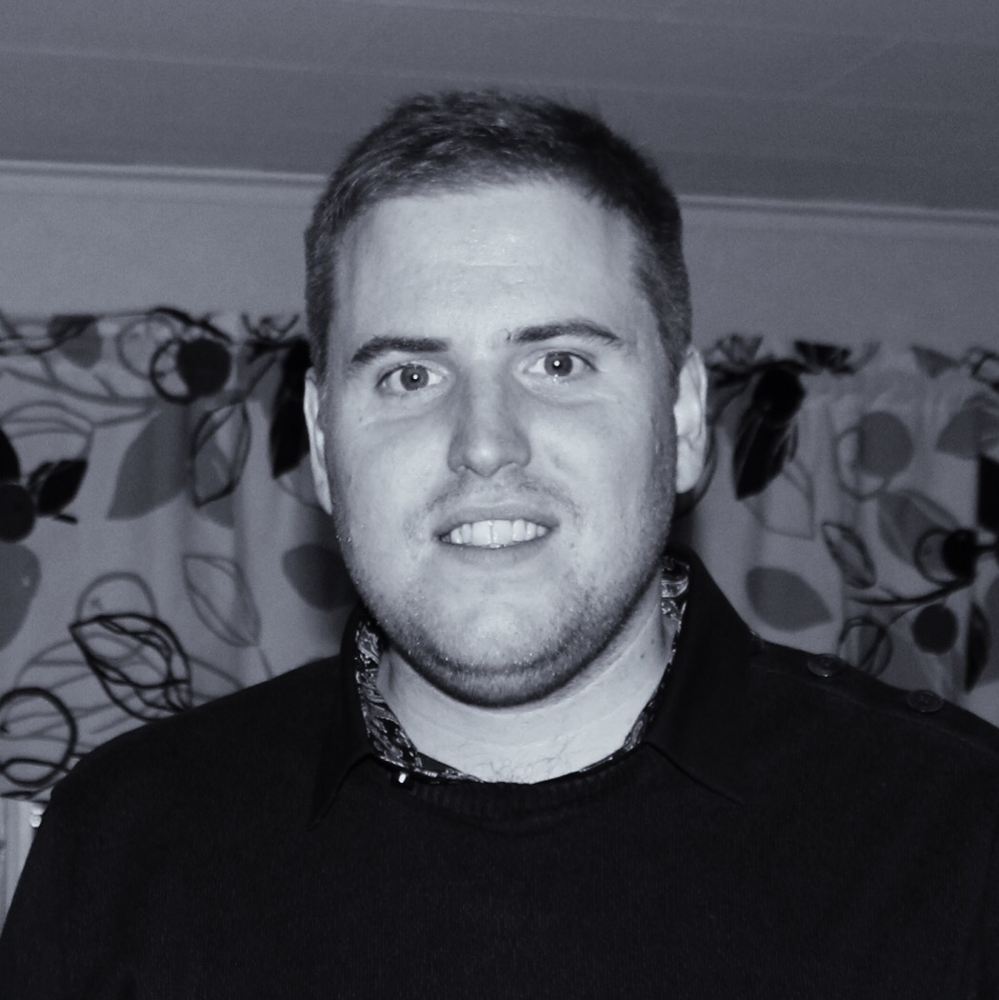

<div class="home">

  <p>Hej, jag heter <span class="bold">Jesper.</span> Lantbrukarson med karriär i maskinhandlarbranshen. Sambo och pappa som är uppväxt och bor mitt i Västergötland.</p>
  <p>
    Stort intresse för teknik och kodning. Gillar att lösa problem och bygga saker för webben, mobilen eller datorn.
  </p>

  <ul class="post-list">
    {% for post in site.posts %}
      <li>
        <span class="post-meta">{{ post.date | date: "%Y-%m-%d" }} > </span>  <a class="post-link" href="{{ post.url | prepend: site.baseurl }}">{{ post.title }}</a>
      </li>
    {% endfor %}
  </ul>
  <h2 class="bold">Mina senaste projekt</h2>
  <p class="bold">Prick - räkna prickarna</p>
  <p class="light-text">
    Ett litet spel för de yngre barnen som lär sig siffrorna. Skrivet i <a href="#">Python</a> och kräver <a href="#">Pythonista</a> för iOS. Projektet hittar ni på <a href="https://github.com/jesperpsvensson/Pythonista-scripts" target="_blank">GitHub</a>.
  </p>
  <h2 class="bold">Kontakt</h2>
  <p>
    Ni hittar mig på de flesta sociala nätverk men framförallt på <a href="http://twitter.com/jesperpsvensson">Twitter</a>, det går även bra att skriva några rader via <a href="mailto:jesperpsvensson@gmail.com">e-post</a>.
  </p>
</div>
